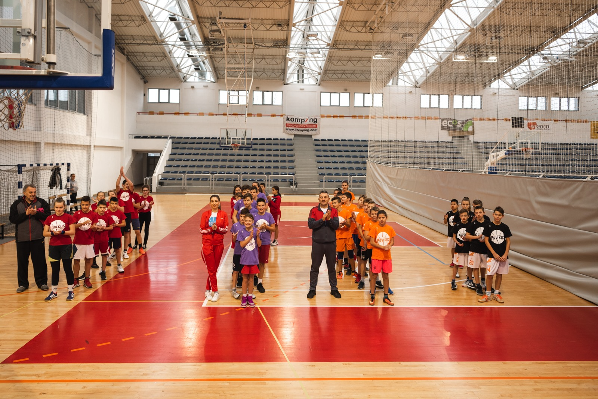
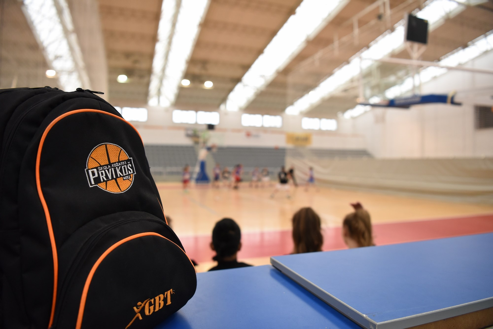
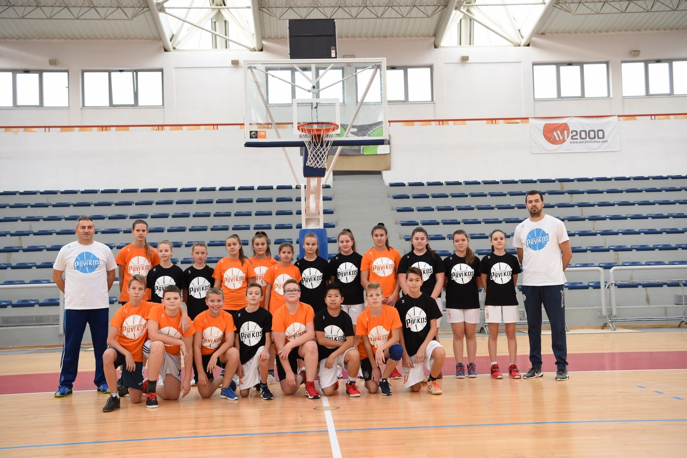

Uspješno završeno Košarkaško prvenstvo osnovnih škola općine Vitez
U srijedu, 11.12.2019., u GSD Vitez, na trećem, ujedno i završnom turniru, uspješno je završeno “KOŠARKAŠKO PRVENSTVO OSNOVNIH ŠKOLA OPĆINE VITEZ”, u organizaciji Škole košarke “Prvi koš” Vitez, a pod pokroviteljstvom Općine Vitez.
Još jednom, učenice i učenici iz 4 osnovne škole koje su se odazvale pozivu organizatora, pokazali su odličnu košarku, a nadamo se kako će se neki od njih odlučiti za još ozbiljniji rad u narednom periodu, uživajući u ovom prelijepom sportu.
Ovu srijedu, kako smo već ranije i naveli, na trećem, ujedno i završnom turniru, na rasporedu su bile utakmice V. i VI. kola. Zadovoljstvo nakon odigranih utakmica nisu krili niti nastavnici TZK-e, voditelji sportskih sekcija, ali ni sami organizatori, Škola košarke „Prvi koš“ Vitez.
Više
Odigrane utakmice III. i IV. kola, podrška projektu stigla i od ministra obrazovanja,znanosti, kulture i športa KSB Bojana Domića
I ovu srijedu, vidjeli smo odlične četiri utakmice, u kojem su mlade košarkašice i košarkaši još odlučnije krenuli po što bolje rezultate, pred odlučujući treći turnir, koji je na rasporedu za dva tjedna, u srijedu 11.12.2019.
Nakon dva turnira i osam odigranih utakmica, itekako postaje jasno, koliko jedan ovakav projekt i natjecanje znače za učenice i učenike osnovnih škola, te koliko je školski sport bitan u pravilnom razvoju djece.
„O važnosti projekta i ideje, koju korak po korak dovodimo pred samu završnicu, govori i podatak, da smo u proteklim danima dobili i pismenu preporuku i podršku za realizaciju našeg projekta, od gospodina Bojana Domića, ministra obrazovanja, znanosti, kulture i športa SBK/KSB. Itekako nam je bitno, kada znamo da se naš rad prati i na višim razinama. Trudit ćemo se opravdati povjerenje!“ poručili su iz Škole košarke „Prvi koš“ Vitez.
Više
Započeo novi projekt Škole košarke „Prvi koš“ Vitez, odigrane utakmice I. i II. kola
U srijedu, 13.11.2019., započeo je novi projekt u organizaciji Škole košarke “Prvi koš” Vitez pod nazivom “KOŠARKAŠKO PRVENSTVO OSNOVNIH ŠKOLA OPĆINE VITEZ”, a koji u potpunosti financira Općina Vitez.
Pozivu organizatora su se odazvale tri osnovne škole s područja općine Vitez: OŠ “Dubravica”, OŠ “Vitez” i OŠ “Bila”, iako je poziv bio upućen svim osnovnim školama. Poziv je također upućen i OŠ “Nova Bila”, što je spomenuta škola objeručke prihvatila, te se dostojno predstavila u prva dva kola prvenstva.
Glavna ideja organizatora, Škole košarke “Prvi koš” Vitez, bila je okupiti 100-ak dječaka i djevojčica, da se natječu u mješovitim ekipama, igrajući košarkaške utakmice u prelijepoj GSD Vitez.
U I. i II. kolu, u već spomenutu srijedu, odigrane su 4 utakmice, a ideja organizatora je da se kroz 3 turnira i 6 kola odigra ukupno 12 utakmica, u trajanju od 2x15min, nakon čega će 3 najbolje plasirane škole dobiti zaslužene pehare i medalje za osvojena mjesta, a sve škole i zahvalnice.
Više
ČLANSKE ISKAZNICE ZA SEZONU 2019./2020.
Spremili smo nove članske iskaznice za sezonu 2019./2020., koje će se prodavati u akciji pod nazivom "NOVA MAJICA ZA VAS-NOVA MAJICA ZA JEDNOG KOŠARKAŠA ILI KOŠARKAŠICU".
Kupovinom članske iskaznice u vrijednosti od 25,00 KM direktno pomažete rad Škole košarke "Prvi koš" Vitez!!
Na poklon, u znak zahvalnosti, dobijate novu, posebno dizajniranu majicu Škole košarke "Prvi koš" Vitez!!
Ono što je još važnije, kako sam naziv akcije kaže, za svaku kupljenu člansku iskaznicu, novu majicu za novu sezonu dobija i jedan košarkaš ili košarkašica u Školi košarke "Prvi koš" Vitez!
UNAPRIJED HVALA!!!
Članske iskaznice možete naručiti i kupiti kod trenera
Više